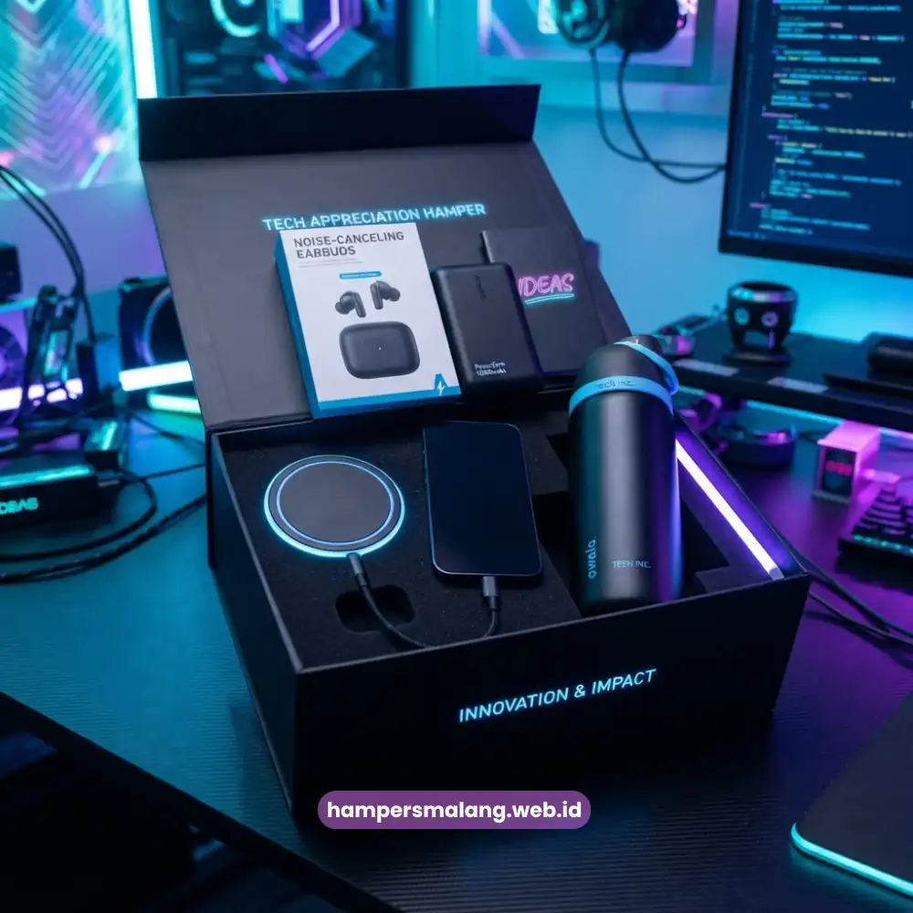

Hampers employee appreciation adalah paket hadiah korporat yang dirancang khusus untuk mengapresiasi kontribusi karyawan, dan biasanya berisi kombinasi produk premium seperti makanan, minuman, serta perlengkapan kerja bertema personal.
Pemberian hampers ini umumnya dilakukan saat momen penting seperti akhir tahun, ulang tahun perusahaan, atau pencapaian target kerja.
Perusahaan yang konsisten memberikan apresiasi semacam ini cenderung memiliki suasana kerja yang lebih positif dan tim yang lebih loyal.
- Hampers employee appreciation berfungsi sebagai simbol nyata pengakuan perusahaan terhadap kerja keras tim.
- Ide hampers yang berkesan menggabungkan unsur personalisasi, kualitas produk, dan kemasan eksklusif.
- Pemilihan isi hampers sebaiknya disesuaikan dengan nilai perusahaan dan preferensi karyawan.
- Hampers yang tepat dapat mendukung program employee engagement secara berkelanjutan.
- Hampers Malang menyediakan layanan kustomisasi hampers korporat untuk kebutuhan apresiasi karyawan Anda.
Apa itu Hampers Employee Appreciation?
Hampers employee appreciation merupakan bentuk penghargaan tidak langsung yang diberikan perusahaan kepada karyawan sebagai wujud terima kasih atas dedikasi mereka.
Berbeda dengan bonus finansial, hampers memberikan pengalaman emosional karena disajikan dalam bentuk fisik yang dapat dilihat, disentuh, dan dinikmati bersama keluarga.
Konsep ini berakar dari budaya corporate gifting yang telah lama diterapkan di berbagai industri, mulai dari perusahaan multinasional hingga UMKM.
Perusahaan yang memahami pentingnya apresiasi non-finansial umumnya menempatkan hampers sebagai bagian dari strategi human resources jangka panjang, bukan sekadar formalitas tahunan.
Baca Juga: Hampers Karyawan sebagai Strategi Jitu Membangun Loyalitas Tim
Untuk Siapa Hampers Apresiasi Karyawan Ini Diberikan?
Hampers employee appreciation dapat diberikan kepada seluruh lapisan organisasi, mulai dari staf operasional, tim lapangan, hingga jajaran manajemen.
Pemberiannya tidak terbatas pada karyawan tetap saja, tetapi juga dapat diperluas kepada karyawan kontrak, mitra kerja lepas, hingga tim magang yang telah menunjukkan kontribusi signifikan selama masa kerja mereka.
Mengapa Hampers Apresiasi Karyawan Penting bagi Perusahaan?
Apresiasi yang konsisten berdampak langsung pada suasana kerja dan hubungan antara perusahaan dengan karyawannya.
Ketika karyawan merasa dihargai secara tulus, mereka cenderung menunjukkan tingkat keterlibatan kerja yang lebih tinggi dan lebih setia terhadap perusahaan tempat mereka bekerja.
Sejumlah kajian di bidang manajemen sumber daya manusia secara umum menunjukkan bahwa program pengakuan karyawan yang dijalankan secara rutin berkorelasi dengan penurunan tingkat turnover dan peningkatan produktivitas tim, meskipun besarannya dapat bervariasi tergantung industri dan skala perusahaan.

Apa Manfaat Hampers Employee Appreciation bagi Budaya Kerja?
Hampers apresiasi karyawan membantu membangun budaya kerja yang saling menghargai.
Manfaat yang umum dirasakan perusahaan antara lain:
- Meningkatkan rasa memiliki karyawan terhadap perusahaan.
- Memperkuat citra perusahaan sebagai tempat kerja yang peduli terhadap kesejahteraan timnya.
- Mendorong motivasi kerja tanpa harus selalu bergantung pada insentif finansial.
- Menciptakan momen kebersamaan yang mempererat hubungan antar divisi.
Bagaimana Cara Kerja Hampers Employee Appreciation dalam Strategi HR?
Hampers apresiasi karyawan bekerja sebagai elemen pelengkap dalam strategi engagement yang lebih luas.
Biasanya, tim HR menjadwalkan pemberian hampers pada momen-momen strategis seperti perayaan hari jadi perusahaan, pencapaian target kuartalan, atau perayaan hari raya keagamaan.
Proses ini umumnya diawali dengan penetapan anggaran, penentuan tema hampers yang relevan dengan nilai perusahaan, hingga koordinasi distribusi ke seluruh karyawan atau cabang.
Semakin personal dan relevan isi hampers dengan kebutuhan karyawan, semakin besar pula dampak emosional yang tercipta.
Faktor yang Perlu Dipertimbangkan Sebelum Memilih Hampers Apresiasi Karyawan
Sebelum menentukan ide hampers yang akan dipesan, perusahaan sebaiknya mempertimbangkan beberapa faktor berikut agar hasilnya benar-benar berkesan bagi penerimanya.
Apa Saja Isi Hampers Apresiasi Karyawan yang Eksklusif?
Isi hampers yang eksklusif umumnya menggabungkan produk berkualitas tinggi dengan sentuhan personal.
Beberapa kombinasi yang banyak diminati perusahaan antara lain rangkaian makanan dan minuman premium, perlengkapan kerja bertema minimalis, produk perawatan diri, hingga suvenir bernuansa lokal yang mencerminkan identitas daerah asal perusahaan.
Kualitas kemasan turut memegang peranan penting.
Kemasan yang rapi, elegan, dan mencerminkan branding perusahaan akan meningkatkan kesan eksklusif meskipun isi hampers tergolong sederhana.
Bagaimana Menyesuaikan Hampers dengan Nilai Perusahaan?
Setiap perusahaan memiliki karakter dan nilai yang berbeda, sehingga ide hampers sebaiknya mencerminkan identitas tersebut.
Perusahaan dengan citra modern dapat memilih hampers bertema minimalis dan fungsional, sementara perusahaan dengan nilai kekeluargaan dapat memilih hampers bernuansa hangat dengan sentuhan personal seperti kartu ucapan bertulisan tangan.
Berapa Anggaran yang Wajar untuk Hampers Employee Appreciation?
Anggaran hampers apresiasi karyawan dapat bervariasi tergantung skala perusahaan, jumlah karyawan, dan momen pemberian.
Umumnya, perusahaan menetapkan kisaran anggaran per hampers berdasarkan kebijakan internal masing-masing, dengan mempertimbangkan keseimbangan antara kualitas produk dan efisiensi biaya secara keseluruhan.
Kesalahan Umum dalam Memilih Hampers Apresiasi Karyawan
Beberapa perusahaan kerap terjebak pada kesalahan yang membuat hampers kehilangan makna apresiasinya, seperti memilih isi hampers yang seragam tanpa mempertimbangkan preferensi karyawan, mengejar harga murah dengan mengorbankan kualitas produk, atau memberikan hampers tanpa momentum yang jelas sehingga terkesan formalitas semata.
Kesalahan lain yang sering terjadi adalah minimnya sentuhan personal, seperti tidak menyertakan pesan apresiasi tertulis.
Padahal, elemen personal inilah yang sering kali membuat karyawan merasa benar-benar dihargai, bukan sekadar menerima barang.
Tips Memilih Ide Hampers Employee Appreciation yang Tepat
Untuk menghasilkan hampers yang benar-benar berkesan, perusahaan dapat mempertimbangkan beberapa tips berikut: menyesuaikan isi hampers dengan momen pemberian, melibatkan unsur personalisasi seperti nama karyawan pada kemasan, memilih kombinasi produk yang seimbang antara fungsional dan hiburan, serta memastikan proses distribusi berjalan tepat waktu agar momen apresiasi tidak kehilangan relevansinya.
Kolaborasi dengan penyedia hampers korporat yang berpengalaman juga dapat membantu perusahaan menghemat waktu perencanaan sekaligus memastikan hasil akhir tetap konsisten dan profesional.
Hampers employee appreciation bukan sekadar hadiah, melainkan investasi jangka panjang dalam membangun hubungan yang sehat antara perusahaan dan karyawannya.
Dengan pemilihan tema, isi, dan momen yang tepat, hampers dapat menjadi alat yang efektif untuk memperkuat engagement, motivasi, dan loyalitas tim.
Tanya Jawab (FAQ)
Hampers employee appreciation adalah paket hadiah korporat yang diberikan perusahaan sebagai bentuk apresiasi atas kontribusi dan dedikasi karyawan.
Waktu yang umum dipilih antara lain akhir tahun, hari jadi perusahaan, pencapaian target kerja, dan momen hari raya keagamaan.
Hampers memberikan pengalaman emosional dan simbol pengakuan yang bersifat fisik, sementara bonus lebih bersifat finansial dan transaksional.
Tambahkan elemen personalisasi seperti nama karyawan, pesan apresiasi tertulis, atau tema yang relevan dengan pencapaian mereka.
Ya, perusahaan dengan skala kecil pun dapat memberikan hampers sederhana namun bermakna untuk membangun budaya kerja yang positif sejak awal.

Butuh Hampers Perusahaan?
Konsultasikan kebutuhan apresiasi karyawan Anda sekarang.
Ditulis oleh Tim Maroon Souvenir
Sahabat mahasiswa dan pelaku bisnis di Malang Raya. Berpengalaman menangani merchandise event kampus, instansi pemerintahan, dan hotel berbintang di Batu.